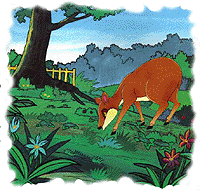

Kancil Mencuri Timun
Suatu pagi hari, Si Kancil yang sedang kelaparan berjalan-jalan menjelajahi hutan. Tanpa terasa, dia tiba di sebuah ladang milik Pak Tani. "Ladang sayur dan buah-buahan? Oh, syukurlah. Terima kasih, Tuhan," mata Kancil membelalak. Dengan tanpa dosa, Kancil melahap sayur dan buah-buahan yang ada di ladang. Wah, kasihan Pak Tani. Dia pasti marah kalau melihat kejadian ini. Si Kancil nakal sekali, ya? Setelah puas makan, Kancil merebahkan dirinya di bawah pohon yang rindang. Semilir angin yang bertiup, membuatnya mengantuk. "Oahem, aku jadi kepingin tidur lagi," kata Kancil sambil menguap. Akhirnya binatang yang nakal itu tertidur pulas.
Keesokan harinya, Pak Tani terkejut sekali ketika melihat ladangnya. "Wah, ladang timunku kok jadi berantakan-begini," kata Pak Tani geram. "Perbuatan siapa, ya? Pasti ada hama baru yang ganas. Atau mungkinkah ada bocah nakal atau binatang lapar yang mencuri timunku?" kata Pak Tani sekali lagi. Maka seharian Pak Tani sibuk membenahi kembali ladangnya yang berantakan. Sore harinya, Pak Tani pulang sambil memanggul keranjang berisi timun di bahunya. Dia pulang sambil mengomel, karena hasil panennya jadi berkurang. Dan waktunya habis untuk menata kembali ladangnya yang berantakan. Maka Pak Tani segera meninggalkan ladang. Setiba di rumahnya, dia membuat sebuah boneka yang menyerupai manusia. Lalu dia melumuri orang-orangan ladang itu dengan getah nangka yang lengket!

Keesokan harinya, Pak Tani kembali lagi ke ladang. Orang-orangan itu dipasangnya di tengah ladang timun. Bentuknya persis seperti manusia yang sedang berjaga-jaga. Pakaiannya yang kedodoran berkibar-kibar tertiup angin. Sementara kepalanya memakai caping, seperti milik Pak Tani. "Wah, sepertinya Pak Tani tidak sendiri lagi," ucap Kancil, yang melihat dari kejauhan. "Ia datang bersama temannya. Tapi mengapa temannya diam saja, dan Pak Tani meninggalkannya sendirian di tengah ladang?" Lama sekali Kancil menunggu kepergian teman Pak Tani. Akhirnya dia tak tahan. "Ah, lebih baik aku ke sana," kata Kancil memutuskan. "Sekalian minta maaf karena telah mencuri timun Pak Tani. Siapa tahu aku malah diberinya timun gratis." Kemudian kancil menghampiri teman pak tani dan meminta maaf karena telah mencuri timun-timunnya. Tentu saja orang-orangan ladang itu tidak menjawab. Berkali-kali Kancil meminta maaf. Tapi orang-orangan itu tetap diam. Wajahnya tersenyum, tampak seperti mengejek Kancil.
"Huh, sombong sekali!" seru Kancil marah. "Aku minta maaf kok diam saja. Malah tersenyum mengejek. Memangnya lucu apa?" gerutunya. Akhirnya Kancil tak tahan lagi. Ditinjunya orang-orangan ladang itu dengan tangan kanan. Buuuk! Lho, kok tangannya tidak bisa ditarik? Ditinjunya lagi dengan tangan kiri. Buuuk! Wah, kini kedua tangannya melekat erat di tubuh boneka itu. "Lepaskan tanganku! Kalau tidak, kutendang kau! " Buuuk! Kini kaki si Kancil malah melekat juga di tubuh orang-orangan itu. "Aduh, bagaimana ini?" Sore harinya, Pak Tani kembali ke ladang. "Nah, ini dia pencurinya! " Pak Tani senang melihat jebakannya berhasil. Kancil pasrah saja ketika dibawa pulang ke rumah Pak Tani. Dia dikurung di dalam kandang ayam dan akan dijadikan sate oleh Pak Tani.
Pesan Moral "Kancil hewan yang cerdik, ternyata mudah untuk diperdaya oleh Pak Tani. Itulah sebabnya kita tidak boleh takabur atau bersikap sombong"
Sumber dongeng : http://belindch.wordpress.com/2011/11/08/dongeng-papa-kancil-mencuri-timun/